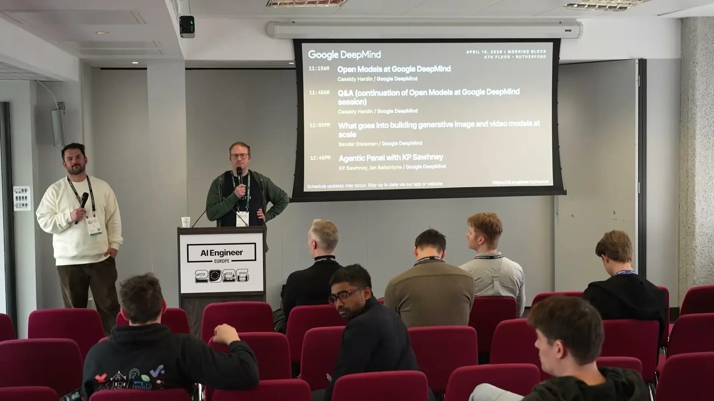

How Google DeepMind Runs Agents at Scale
DeepMind runs internal agents on Antigravity with token quotas, a custom observability UI, an agent trajectory store, and Darwinian pruning of a large internal skills library.
If you only read one thing
- DeepMind manages agent scaling mostly through brute-force token quota per user/team; a single power user can be told to stop a job, and this is currently handled manually rather than by pricing (c1, c2).
- DeepMind built custom observability tooling including a drill-down UI to raw model predict requests and an 'agent trajectory store' specifically to diagnose where a coding agent's looping or derailment started (c3).
- Internally, DeepMind has a large skills library that risks sprawling out of control in an org Google's size, so there's active work to prune it to only the best-surviving skills, described as 'almost Darwinian' (c4).
This traces the scaling loop DeepMind described: Antigravity spawns agents that burn tokens under brute-force quota control while a separate observability layer and a Darwinian skills-pruning process try to keep the system legible (ours).
Why this talk is a blueprint, not a take (ours)
Scope: Internal agent tooling and scaling practices at Google DeepMind, for engineers using agentic coding tools like Antigravity; not a customer-facing product.
A picture of how a large AI lab currently controls internal agent token spend and diagnoses agent failures: brute-force quota enforcement backstopped by human SRE monitoring, plus purpose-built observability (a drill-down UI and a coding-specific trajectory store) and an actively curated internal skills library. It stops short of describing any automated pricing or allocation model beyond manual intervention.
Prerequisites the talk implies:
- An internal agent runtime or IDE (their example is Antigravity) that can spawn and track multiple agent sessions
- Per-user and per-team token usage metering wired into the runtime
- An SRE or ops function willing to monitor usage graphs and intervene manually
- A logging pipeline that captures raw model predict requests per query, plus a store for agent action trajectories on coding tasks
- A process, and enough internal traffic, for skills to be contributed by domain experts, since pruning only matters once a library is big enough to sprawl
What the talk does not say:
- No numbers on quota thresholds, team sizes, or how many power users trigger intervention
- No description of how skills are scored or selected for pruning, i.e. what 'Darwinian' means operationally
- No cost figures or estimate of what current brute-force quota enforcement costs in SRE time
- No detail on how eval datasets or sandboxed environments get built beyond the skill author building their own tests
- No timeline for when a more sophisticated, non-brute-force pricing or allocation mechanism might replace manual quota enforcement
If you were to replicate one thing first: Before building trajectory stores or pruning pipelines, start by logging per-user and per-team token consumption against your agent runtime and assign someone to watch it daily, since DeepMind's own scaling control is still that manual step.
| Component | What it does (from the talk) | Evidence | Slide |
|---|---|---|---|
| Antigravity IDE | Full agent manager framework behind the visible chat panel; spawns and runs multiple agents working on different projects at once. | c5 · 01:03 |  |
| Token quota | Brute-force per-user and per-team token limits, currently the main lever DeepMind uses to control agent scaling. | c1 · 11:56 |  |
| SRE team | Monitors usage spikes and graphs around the clock and manually asks power users to stop jobs on specific clusters. | c1 · 11:56 | |
| Drill-down observability UI | Custom web app where every query issued to the internal agent backend can be drilled down to the raw predict requests made to the model. | c3 · 14:01 | |
| Agent trajectory store | Separate store focused on coding tasks, used to diagnose the exact step where an agent's looping or derailment started. | c3 · 14:01 | |
| Skills library | Large internal library of skills contributed by domain experts across DeepMind. | c4 · 06:09 |  |
| Darwinian pruning process | Active effort to prune the skills library down to only the best-surviving skills as it risks sprawling out of control at Google's scale. | c4 · 06:09 | |
| Eval and sandbox tooling | Spins up sandboxed environments to evaluate agentic workflows; datasets for evaluating specific internal skills are scarce, so skill authors mostly build their own tests. | c6 · 19:19 |  |


Antigravity's agent manager runs multiple spawned agents inside the IDE
- Ballantyne demos Antigravity, DeepMind's IDE-style tool, showing it has a full agent manager framework behind the visible chat panel that can spawn multiple agents working on different projects, complete with a built-in to-do/planning system, browser control for testing web apps, DOM inspection, and a scratchpad trace of its own actions that a human can review or interrupt before saying 'proceed.'
“it actually has a whole agent manager and agent manager framework behind it. So, you can run and spawn multiple agents working on different projects”
said at 01:03Token quota is the main lever for controlling scale, currently brute force
- Sawhney says token hunger is the top-of-mind scaling challenge, requiring per-user and per-team quota management, and that stopping a runaway power user currently happens through brute-force quota enforcement -- DeepMind's SRE team monitors spikes and graphs 24/7 and manually asks users to stop jobs on specific clusters.
- He connects this to Anthropic blocking excessive Open Claw usage and predicts subscription pricing won't work long-term for token-hungry agentic systems.
- Brute-force token quota per user/team
- SRE manually asks power users to stop jobs
- Subscription pricing doesn't fit token-hungry agents
- No stated replacement mechanism yet
“honestly right now it's kind of brute force with the the quota. So we have we have some real power users at DeepMind”
said at 11:56“these these agentic systems are so token hungry and the subscription model doesn't really work for that”
said at 12:28Custom observability tooling: drill-down UI plus agent trajectory store
- DeepMind built a custom web app where every query issued to an internal agent backend automatically appears in a UI that can drill down to the raw predict requests made to the model, plus a separate 'agent trajectory store' focused on coding tasks specifically to diagnose at what exact step looping started or the model went off the rails.
- Every query auto-appears in the UI
- Drills into raw predict requests per query
- Focused on coding tasks specifically
- Diagnoses exact step where agent went off the rails
“it can be really important to kind of diagnose at what exact point looping started happening or you know, the model went off the rails”
said at 14:01


Skills are winning over MCP internally, but sprawl is a real risk
- Sawhney says DeepMind has built a huge internal library of skills contributed by domain experts, but at Google's scale that risks sprawling out of control, so there's active work pruning it down to only the best-surviving skills in an 'almost Darwinian' process.
- A questioner from the audience separately said a combination of skills plus guardrail CLI interactions has worked better for them than MCP, which they called 'a little bit of a flash in the pan' outside of its auth use case.
- Built by domain experts internally
- Worked better for this questioner's team
- Called 'a flash in the pan' outside auth
- Not this questioner's pick for most tasks
“there's a risk of skills really sprawling out out of control. Um and so that's a that's a big area of focus for us right now”
said at 06:09Evaluating agentic workflows is hard, and the field is thin on datasets
- Sawhney says evaluation is one of DeepMind's current focus areas, particularly because spinning up sandboxed environments to evaluate complex workflows is mechanically difficult and there's a shortage of good datasets for evaluating specific internal skills -- the burden currently falls on each skill's author to build their own tests, and some teams are experimenting with having agents design that testing themselves.
“even just the the mechanical nature of spinning up all of these sandboxed environments, set up in in in the way needed to to evaluate evaluate a particular um problem set”
said at 19:19Commentary (ours)
The trajectory-store detail is worth noting because it's a purpose-built tool for a failure mode (agent goes off the rails mid-task) that most teams currently just eyeball from raw logs -- suggests dedicated agent-trajectory tooling may become as standard as APM is for services (ours).


Underlying detail — every claim, typed and timestamped (6)
| Stance | Claim | t |
|---|---|---|
| asserts | DeepMind currently controls agent scaling mostly through brute-force token quota enforcement rather than a more sophisticated mechanism. | 11:56 |
| predicts | Subscription pricing doesn't work well for token-hungry agentic systems, which raises questions about how agent usage will be priced in the future. | 12:28 |
| asserts | DeepMind built a custom agent trajectory store focused on coding tasks to diagnose the exact point where an agent's looping or derailment started. | 14:01 |
| warns | DeepMind's internal skills library risks sprawling out of control at Google's scale, requiring active Darwinian-style pruning to keep only the best skills. | 06:09 |
| asserts | Antigravity has a full agent manager framework behind its visible chat panel that can spawn and run multiple agents working on different projects. | 01:03 |
| warns | Spinning up sandboxed environments to evaluate agentic workflows is mechanically difficult, and there's a shortage of good datasets for evaluating specific internal skills. | 19:19 |
Machine-readable copy embedded in this page (script#ontology) and in the corpus ontology.